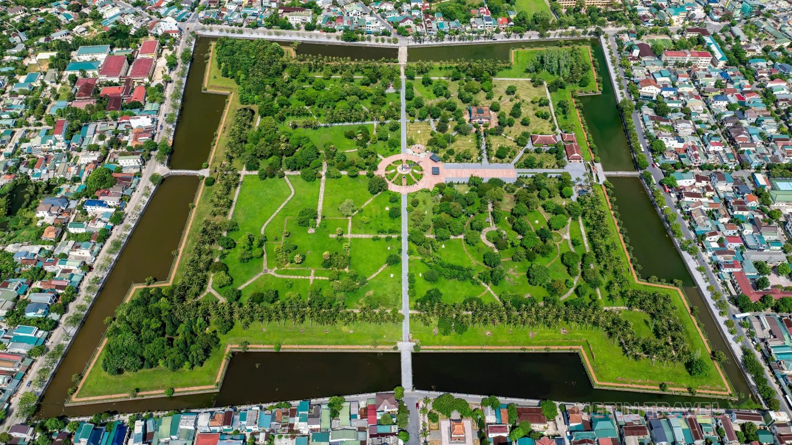
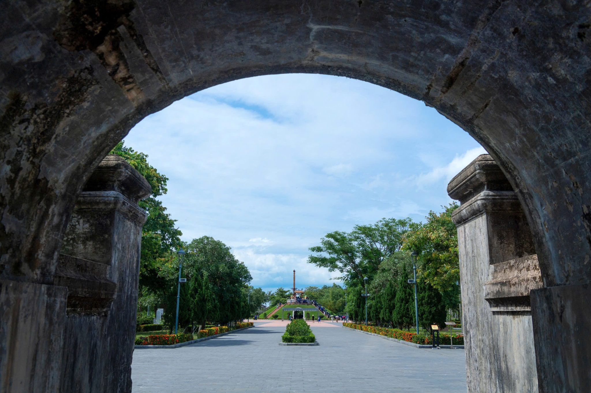
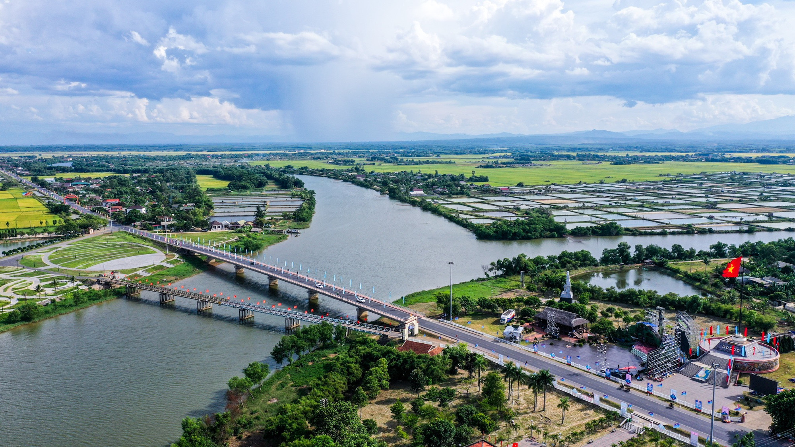
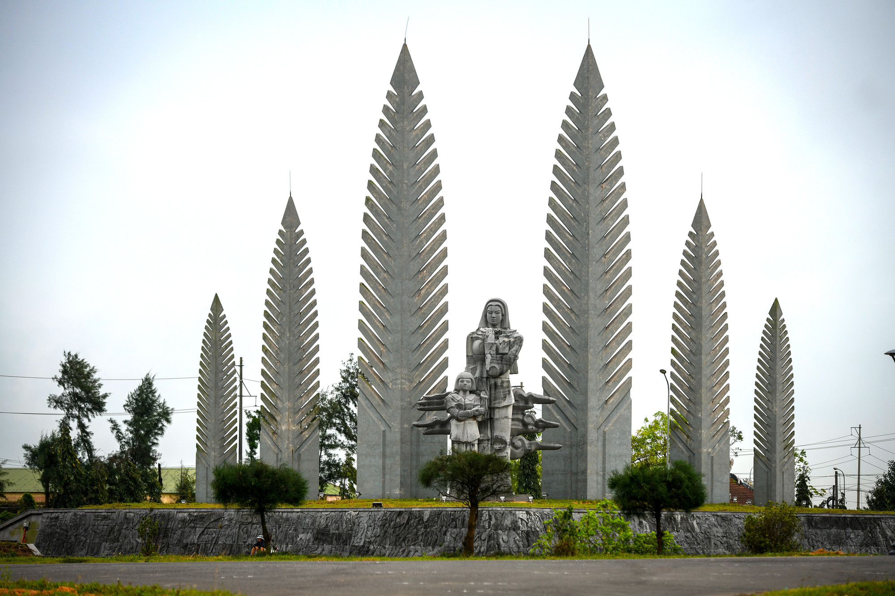
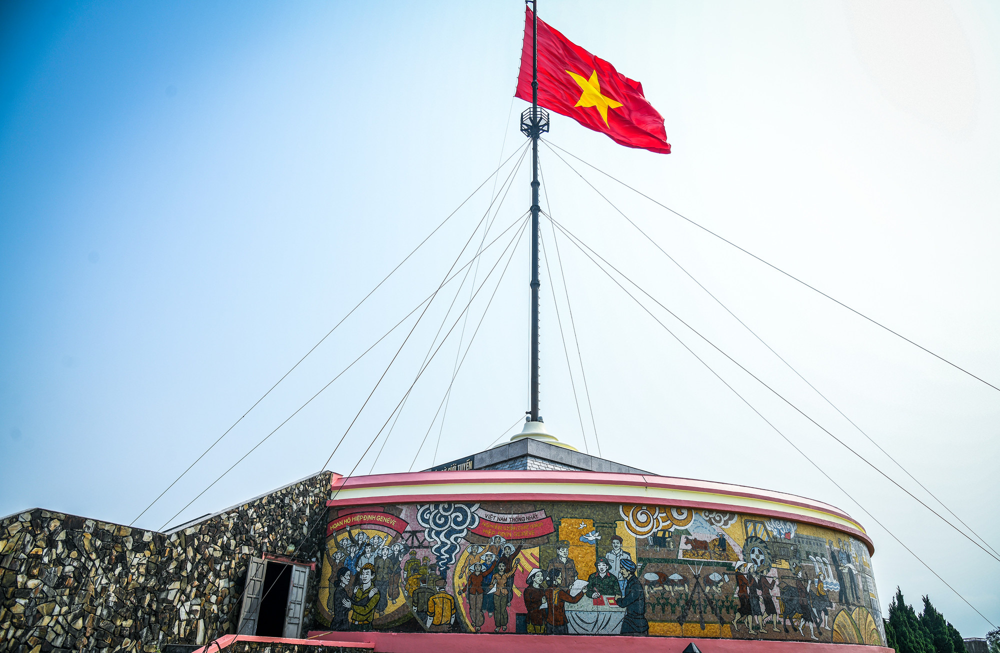
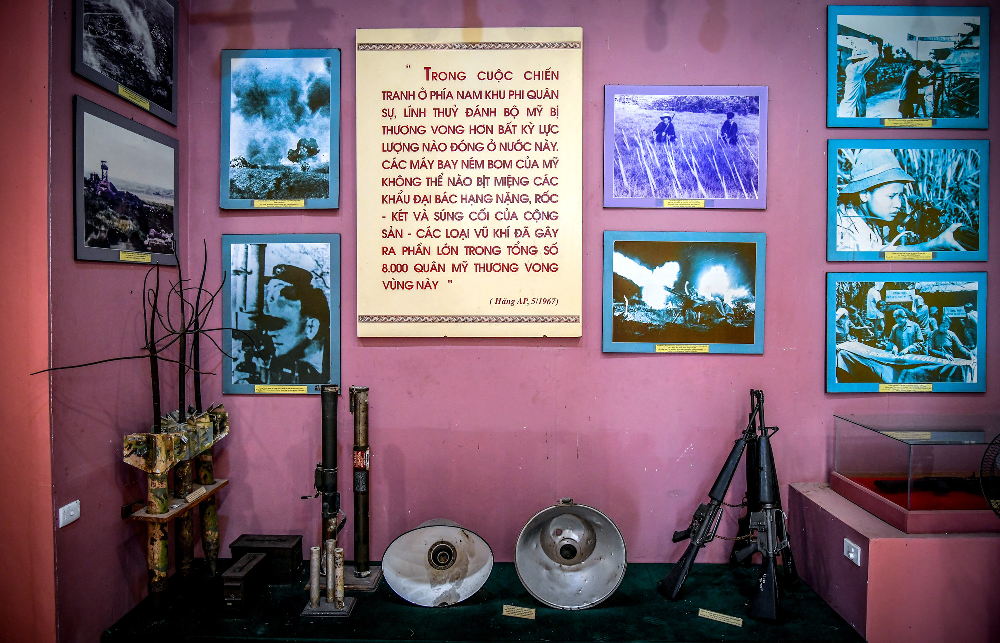
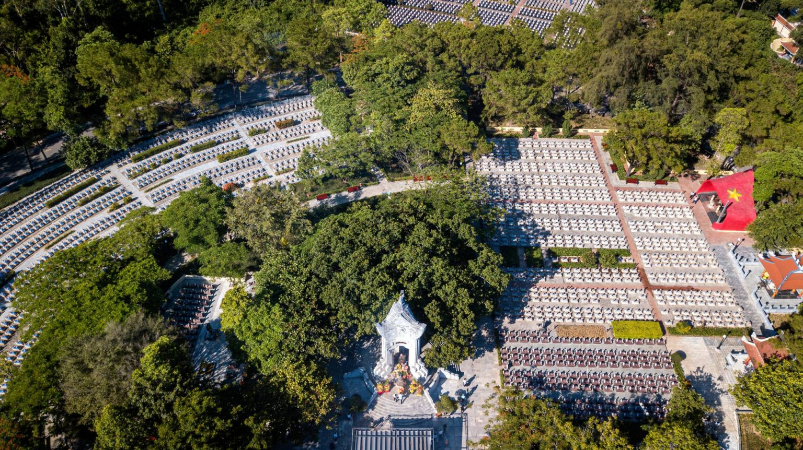
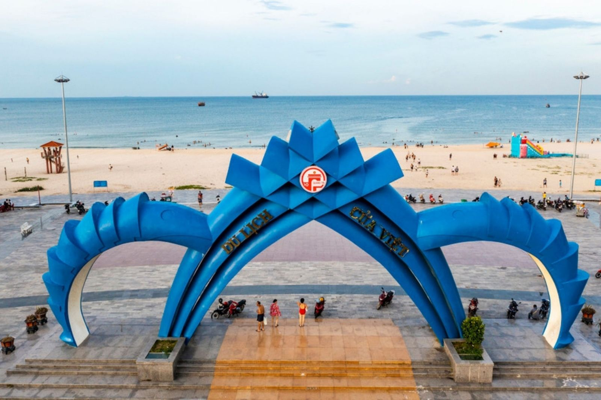
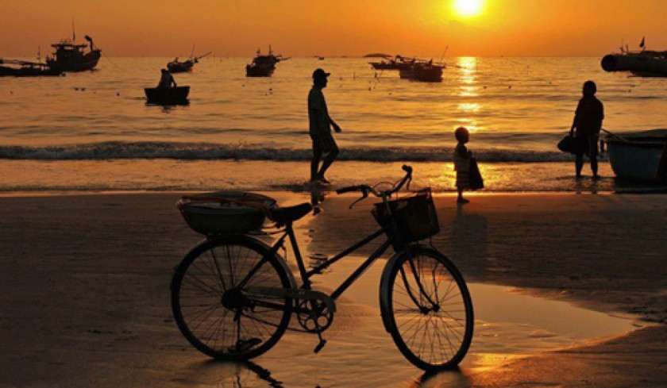

Địa điểm nổi bật tại Quảng Trị
1. Xem thông tin Thành Cổ Quảng Trị 2. Xem thông tin Cầu Hiền Lương 3. Xem thông tin Nghĩa trang Trường Sơn 3. Xem thông tin bãi biển Cửa Tùng-
Thành cổ Quảng Trị
Thành cổ Quảng Trị nằm ở trung tâm thị xã Quảng Trị, cách quốc lộ 1A khoảng 2km. Được xếp hạng là di tích quốc gia đặc biệt, Thành cổ Quảng Trị là biểu tượng lịch sử của cuộc kháng chiến chống Mỹ. Nơi đây gắn liền với những địa danh lịch sử nổi tiếng như Cầu Hiền Lương, sông Bến Hải, ghi dấu nỗi đau chia cắt đất nước. Thành cổ còn là chứng nhân của cuộc chiến tranh ác liệt, đặc biệt là trận chiến 81 ngày đêm trong chiến dịch tái chiếm Quảng Trị năm 1972. Thành cổ Quảng Trị không chỉ là di tích lịch sử, mà còn là một phần ký ức sống động của dân tộc, gắn kết quá khứ và hiện tại, nhắc nhở thế hệ hôm nay về những mất mát và hy sinh trong cuộc chiến bảo vệ đất nước.
Hình ảnh Thành cổ Quảng Trị nhìn từ trên cao Thành cổ Quảng Trị là công trình quân sự và lỵ sở cai trị của Nhà Nguyễn tại Quảng Trị. Nó cũng là trung tâm tỉnh lỵ dưới thời Pháp và chính quyền miền Nam. Nổi bật trong cuộc tổng tấn công giải phóng Quảng Trị năm 1972, Thành cổ là biểu tượng của những chiến công và hy sinh anh dũng trong cuộc chiến bảo vệ thị xã Quảng Trị trong 81 ngày đêm lịch sử.
Thành cổ Quảng Trị nằm trên địa phận các làng Thạch Hãn và Cổ Vưu, được bao quanh bởi sông Thạch Hãn (phía Tây) và sông Vĩnh Định (phía Bắc). Phía Đông và Nam là đồng bằng Triệu Hải. Vị trí thuận lợi giúp Thành cổ trở thành trung tâm chính trị, kinh tế, văn hóa, và xã hội của vùng, kết nối các tuyến đường sông, biển và bộ.
Kiến trúc của Thành Cổ Quảng Trị
Thành cổ Quảng Trị là một tòa thành có cấu trúc hình vuông theo kiểu Vauban. Bộ phận kiến trúc chính tạo ra diện mạo tổng quát của thành Quảng Trị là cấu trúc phòng thành. Nội thành là những công trình mang các chức năng khác nhau liên quan đến một trung tâm hành chính được xây dựng và bố trí theo quy cách chung. Bao xung quanh là hệ thống hào thành. Dưới thân thành có đường phòng hộ. Trước mỗi cửa thành đều có một chiếc cầu xây vòm cuốn bắc qua hào thành nối bên trong với bên ngoài. Chiều dài của tường thành tính từ mép ngoài và ở 4 góc pháo đài là 1.040m.
Cổng chính của Thành Cổ 
Cây thiên mệnh Nội thành có nhiều công trình kiến trúc được xây dựng nhằm mục đích phục vụ trực tiếp cho việc ở và làm việc của các cơ quan công đường thuộc bộ máy hành chính của tỉnh Quảng Trị. Công trình trọng yếu trước hết phải kể đến là hành cung, Phía sau hành cung là những cơ quan công đường, nơi ở và làm việc của các quan lại thuộc bộ máy hành chính đứng đầu tỉnh như: dinh Tuần phủ, dinh Án sát, dinh Bố chính, dinh Lãnh binh, nhà Kiểm học, trại quân, nhà bếp, nhà kho, khám đường, ngục thất. Các công trình này đều được xây dựng theo mô thức kiến trúc kiểu nhà rường thời Nguyễn với bộ khung gỗ chịu lực, mái lợp ngói liệt, xung quanh xây tường gạch hoặc che ván gỗ.
Có thể nói vị thế của thành Quảng Trị dưới thời Nhà Nguyễn và những giai đoạn tiếp sau giữ vai trò của một Trung tâm hành chính hơn là một công trình phòng thủ quân sự. Tại đây, hơn 160 năm dưới thời quân chủ là cơ quan đầu não của bộ máy chính quyền địa phương đại diện cho triều đình Huế thực hiện các quyền quản lý và điều hành tình hình chính trị, kinh tế, văn hóa, xã hội trên toàn địa hạt. Ðây cũng chính là nơi đã từng diễn ra nhiều sự kiện lịch sử đáng được lưu ý.
-
Khu di tích Cầu Hiền Lương – Sông Bến Hải
Cầu Hiền Lương Sông Bến Hải là điểm du lịch thu hút nhiều du khách dừng chân khi đi qua mãnh đất Quảng Trị. Cầu Hiền Lương nằm sát ngay bên cạnh quốc lộ 1A nên thuận lợi cho du khách muốn thăm quan địa danh lịch sử này.
Cầu Hiền Lương nhìn từ trên cao Cầu Hiền Lương là một trong những di tích lịch sử đặc biệt quan trọng của Việt Nam, nằm bắc qua sông Bến Hải, thuộc huyện Vĩnh Linh, tỉnh Quảng Trị. Nơi đây từng là giới tuyến quân sự tạm thời, chia cắt hai miền Nam – Bắc Việt Nam theo Hiệp định Giơ-ne-vơ năm 1954, trở thành biểu tượng đau thương nhưng cũng đầy kiên cường của dân tộc trong những năm tháng chiến tranh.
Ban đầu, cầu Hiền Lương được xây dựng bằng gỗ vào năm 1952 với mục đích phục vụ giao thông. Sau đó, cầu được thay thế bằng cầu thép và được sơn hai màu khác nhau, tượng trưng cho hai miền đất nước bị chia cắt. Mỗi bên cầu đều có cột cờ, loa phóng thanh và các công trình phục vụ cho cuộc đấu tranh chính trị, tư tưởng kéo dài suốt nhiều năm.
Trong suốt thời kỳ đất nước bị chia đôi, cầu Hiền Lương không chỉ là ranh giới địa lý mà còn là ranh giới của nỗi đau chia ly, của khát vọng thống nhất. Biết bao gia đình, người thân chỉ có thể nhìn thấy nhau từ hai bờ sông mà không thể gặp gỡ. Tuy vậy, nơi đây cũng ghi dấu tinh thần yêu nước mãnh liệt, ý chí kiên cường và niềm tin sắt đá vào ngày non sông liền một dải.
Ngày nay, cầu Hiền Lương – sông Bến Hải đã được xếp hạng là Di tích lịch sử quốc gia đặc biệt. Du khách đến tham quan không chỉ được tìm hiểu về một giai đoạn lịch sử hào hùng mà còn cảm nhận sâu sắc giá trị của hòa bình, độc lập và thống nhất. Cầu Hiền Lương mãi mãi là biểu tượng thiêng liêng, nhắc nhở các thế hệ hôm nay và mai sau về những hy sinh to lớn để có được cuộc sống hòa bình như hiện tại.
Các hạng mục khác trong khu di tích
Cụm tượng đài “Khát vọng thống nhất Nằm ở bờ nam sông Bến Hải, phía Đông Quốc lộ 1A, có diện tích 2.700m2, gồm hai phần: phần bệ đài, với mặt cạnh là mảng phù điêu, được ghép từ nhiều khối đá, có kích cỡ khác nhau; phần tượng đài là hình tượng bà mẹ miền nam (cao 7,70m) và người con trai (cao 5,50m), được tạo trên chất liệu đá xanh Thanh Hóa.
Cột cờ giới tuyến Nằm bờ bắc sông Bến Hải cũng là chứng nhân lịch sử cho cuộc chiến "đấu cờ" ở hai bên vùng giới tuyến sau hiệp định Geneva năm 1954. Cột cờ hiện nay được xây dựng theo mẫu thiết kế năm 1962, cao 38,6m, bên dưới được bổ sung phần đài nhằm tôn vinh chiến thắng.
Nhà trưng bày “Vĩ tuyến 17 và khát vọng thống nhất non sông” Nằm bên bờ Bắc sông Bến Hải, là một trong những hạng mục di tích quan trọng, có vai trò giới thiệu và tái hiện sinh động giai đoạn lịch sử đất nước bị chia cắt sau Hiệp định Giơ-ne-vơ năm 1954.
Nhà trưng bày lưu giữ và giới thiệu nhiều tư liệu, hình ảnh, hiện vật quý giá phản ánh đời sống, tinh thần đấu tranh kiên cường của quân và dân hai bờ sông Bến Hải trong suốt hơn 20 năm đất nước tạm thời chia cắt. Nội dung trưng bày tập trung làm rõ vị trí đặc biệt của vĩ tuyến 17, nơi Cầu Hiền Lương trở thành biểu tượng của giới tuyến quân sự, đồng thời là ranh giới của nỗi đau chia ly và khát vọng đoàn tụ.
-
Nghĩa trang liệt sĩ Trường Sơn
Giới thiệu chung về nghĩa trang liệt sĩ Trường Sơn
Nghĩa trang liệt sĩ Trường Sơn Nghĩa trang Trường Sơn là nghĩa trang cấp Quốc gia, có quy mô lớn nhất Việt Nam dành cho các anh hùng liệt sĩ trên tuyến đường Trường Sơn – huyết mạch chiến lược vận chuyển nhân lực, lương thực, vũ khí từ Bắc vào Nam trong kháng chiến chống Mỹ. Công trình được xây dựng nhằm tưởng niệm và tri ân hơn 10.000 anh hùng liệt sĩ đã anh dũng hy sinh trên tuyến đường Trường Sơn – đường Hồ Chí Minh huyền thoại trong cuộc kháng chiến chống Mỹ cứu nước.
Toàn bộ khu nghĩa trang được quy hoạch trên triền đồi rộng lớn, bao phủ bởi cây xanh, tạo nên không gian thanh bình, linh thiêng và trong lành. Đây là điểm đến mà mỗi người Việt nên ghé thăm ít nhất một lần trong đời.
Vị trí Nghĩa trang Liệt sỹ Trường Sơn
- Địa chỉ: Đồi Bến Tắt, xã Cồn Tiên, tỉnh Quảng Trị.
- Cách trung tâm TP. Đồng Hới (tỉnh Quảng Trị mới): khoảng 40 km về phía Tây Nam.
- Cách trung tâm Đông Hà tầm 30km hướng Tây Bắc.
- Cách Quốc lộ 1A: hơn 20 km.
- Nằm cạnh Quốc lộ 15, thuận tiện cho các đoàn tham quan, du lịch tâm linh.
Nghĩa trang được khởi công xây dựng vào năm 1975 và hoàn thành vào năm 1977, với tổng diện tích hơn 140 ha. Toàn bộ khuôn viên được thiết kế hài hòa với thiên nhiên, dựa lưng vào đồi núi Trường Sơn, tạo nên không gian trang nghiêm, yên tĩnh và linh thiêng. Các phần mộ được sắp xếp theo từng khu vực tương ứng với các tỉnh, thành trong cả nước, thể hiện tinh thần đoàn kết và sự gắn bó máu thịt của quân và dân Việt Nam trong chiến tranh.
Trung tâm nghĩa trang là Đài tưởng niệm liệt sĩ, nơi khắc ghi công lao to lớn của các chiến sĩ đã ngã xuống vì độc lập, tự do của Tổ quốc. Đây cũng là nơi thường xuyên diễn ra các hoạt động dâng hương, tưởng niệm của lãnh đạo Đảng, Nhà nước, cựu chiến binh và đông đảo nhân dân, du khách trong và ngoài nước.
Ngày nay, Nghĩa trang Liệt sĩ Trường Sơn không chỉ là nơi yên nghỉ của các anh hùng liệt sĩ mà còn là địa chỉ đỏ giáo dục truyền thống cách mạng, góp phần nhắc nhở các thế hệ hôm nay và mai sau về sự hy sinh to lớn của cha ông, từ đó trân trọng hơn giá trị của hòa bình và độc lập dân tộc.
-
Biển Cửa Tùng
Cổng chào ở biển Cửa Việt Bãi biển Cửa Việt tọa lạc ở xã Cửa Việt, tỉnh Quảng Trị, nằm trong Khu du lịch Cửa Việt huyện Gio Linh. Cách thành phố Đông Hà 15km về phía Đông, bãi biển Cửa Việt trải dài với bãi tắm rộng, nước trong xanh, cát trắng mịn sạch sẽ bên những rừng dương xanh ngát. Thời tiết nơi đây khá nóng vào mùa ạ do ảnh hưởng từ gió Lào, tuy nhiên làn nước tại biển Cửa Việt luôn mát mẻ giúp bạn được giải nhiệt, quên đi cái nắng nóng oi ả và thả mình vào cảm giác sảng khoái.

Biển Cửa Việt thích hợp tham quan vào mọi thời điểm trong năm. Tuy nhiên để tránh cái nắng oi bức khó chịu thì bạn không nên đi biển Cửa Việt vào tháng 5 – 6. Từ tháng 9 – 11 là thời điểm biển đón nhiều cơn bão lớn và xuất hiện mưa kéo dài, không phải là thời điểm thích hợp để tham quan biển. Vì thế, thời gian thích hợp đến để đến thăm, vui chơi và nghỉ dưỡng tại bãi biển này là vào tháng 12 – 4 năm sau.
Khung cảnh bình minh biển Cửa Việt Điểm đặc biệt tại bãi tắm Cửa Việt đó là mặt nước trong xanh hòa vào làn mây trời, bãi cát trắng phau chạy dài tít tắp giống như một bức tranh phong cảnh tuyệt đẹp. Vào sáng sớm, được đi dạo trên bãi biển ngắm bình minh và đón những tia nắng ban mai đầu tiên. Bạn sẽ thấy lòng mình nhẹ nhõm và vui vẻ hơn rất nhiều. Bầu trời tại biển Cửa Việt vào sáng sớm trong vắt một màu xanh, không một gợn mây. Không khí thoáng mát từ những hàng cây xanh khi kết hợp với làn gió mang theo vị mặn của biển cả càng làm cho du khách cảm thấy xao xuyến hơn.
Nếu như bình minh trên biển Cửa Việt mang nét đẹp trong trẻo, tràn đầy sức sống. Khung cảnh hoàng hôn nơi đây lại mang một nét đẹp dịu dàng, quyến rũ và mộng mơ hơn rất nhiều.
Đến bãi biển Cửa Việt trong chuyến du lịch Quảng Trị mà không mang theo máy ảnh để lưu lại những khoảnh khắc tuyệt đẹp của tạo hóa thì sẽ là điều đáng tiếc.